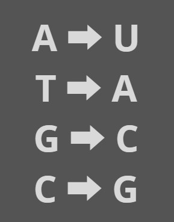
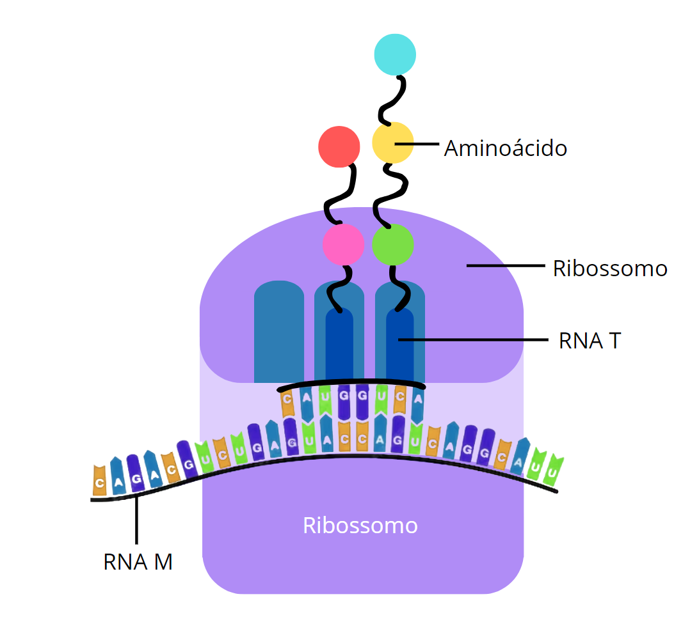
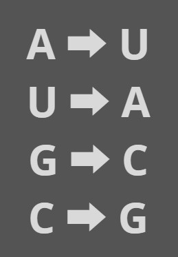
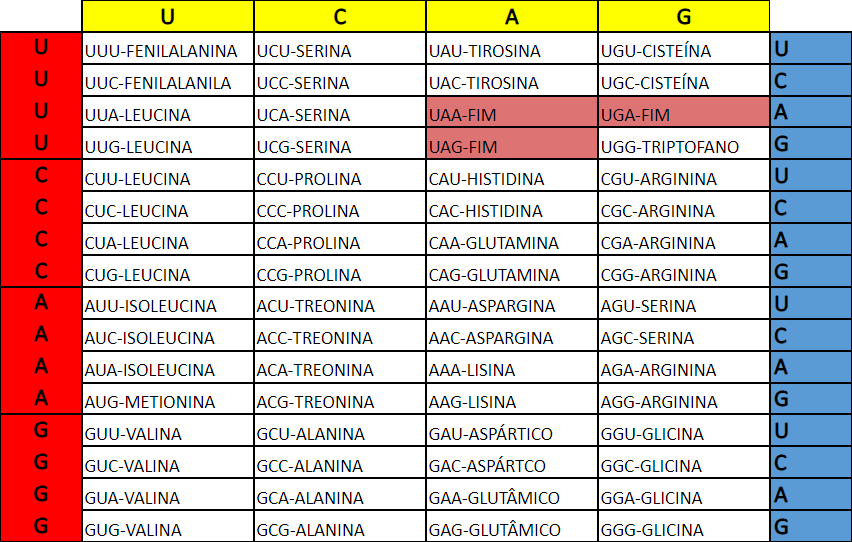

O código genético é um sistema de tradução que possui a relação entre a sequência de bases nitrogenadas do DNA e a sequência correspondente de aminoácidos que compõem a proteína. As pessoas possuem 46 moléculas de DNA, e nessas moléculas estão os nossos genes; cada um guarda informação para que nosso corpo produza uma proteína. No entanto, para produzir proteínas, nós precisamos dos aminoácidos, pois para formar a proteína é necessário um conjunto de aminoácidos. Todas as informações que estão no DNA são expressadas a partir da proteína, diferenciando cada pessoa pela mudança de DNA, modificando as proteínas para serem diferentes, mostrando que o código genético é universal, independente do ser vivo, sempre se encaixando na tabela de aminoácidos.
O código genético é a linguagem na qual ele pega as letrinhas e, a partir da combinação diferente dessas 3 letras, é formado e encaixado um aminoácido na proteína. Para encontrar o códon na tabela do código genético, basta entender que ela é dividida em 3 bases, e é em cada base dessa que irá procurar pelo aminoácido. Por exemplo, suponhamos que a trinca de letras ficou em AUC; começamos verificando pela base da esquerda que guarda a primeira letra (A). Ao achar, iremos para a segunda base que é a de cima, que guarda a segunda letra (U), faltando só a última letra. Ela é localizada no lado direito guardando a letra (C). Após fazer essa "batalha naval" de Códon, é encontrado Isoleucina como aminoácido dessa trinca, e essa regra se repete. Todas as 3 primeiras letrinhas do RNAm serão AUG, com o primeiro aminoácido transformando-se em metionina.
Sempre os códons se iniciam pela metionina (AUG) e sempre vão terminar nos Códons de fim ou parada, sendo eles UAA, UAG e UGA. Ao todo, a tabela tem 4 bases nitrogenadas, 20 aminoácidos diferentes e 64 Códons.
Para ocorrer a síntese de proteínas, é necessário que aconteça um processo de transcrição, em que a informação genética no DNA é traduzida para RNA mensageiro, e por fim transcrita novamente para uma sequência de aminoácidos que formam a proteína, aprenda a fazer esse processo manualmente em três passos:
1 - DNA para RNA mensageiro:
O DNA está no núcleo da célula, porém a síntese das proteinas acontece no ribossomo, outra estrutura da célula, então uma enzima chamada de RNA mensageiro lê a sequência do DNA para levar ao ribossomo a indormação genética.
Para a leitura da sequência das bases nitrogenadas do DNA, o RNAm realiza um processo de transcrição, onde adenina(A) é trasncrita para uracila(U), timina(T) para adenina(A), guanina(G) para citosina(C) e citosina(C) para guanina(G), que é a regra de Chargaff, como na imagem a seguir:

Então o RNA mensageiro parte aos ribossomos.
2 - RNA mensageiro para RNA transmissor:
Ao chegar no ribossomo, o RNA mensageiro é trasncrito novamente, porém para RNA transmissor, conforme mostra a imagem a seguir:

Com isso, ocorre novamente a regra de Chargaff, porém sem a timina(T), então a uracila(U) vira adenina(A) e adenina vira uracila(U), na seguinte regra:

Essa ligação peptídica entre os aminoácidos forma uma cadeia polipeptídica.
3 - A síntese das proteínas:
Cada três sequências de bases nitrogenadas (A, U, G, C) forma um códom. Esses códons viram aminoácidos e os aminoácidos formam as proteínas.
A seguinte imagem apresenta uma tabela onde é apresentado como ocorre a transformação dos códons em proteína.

Para localizar um aminoácido, é necessário separá-lo em suas três bases nitrogenadas, como exemplo, será utilizado a sequência CAU, que ao separar, temos as bases C, A e U, respectivamente. A primeira base nitrogenada está na linha da esquerda, representada pela cor vermelha, como no exemplo da sequência CAU, a primeira letra é C, então o aminoácido estará na linha onde as bases começam com C.
A próxima base é representada pela letra A, então é necessário olhar para as colunas, que aqui estão representadas em amarelo. Fazendo uma espécie de "batalha naval" e cruzando as duas informações referentes a linha e coluna, é possível encontrar um bloco formado pelas bases CAU, CAC, CAA e CAG.
Por fim, é necessário olhar para as linhas da direita, representadas em azul, onde se deve procurar a última letra, que no caso é U.
Com isso, é possível ver que o códom CAU origina o aminoácido histidina.
Portanto, para uma sequência de códons, é necessário fazer essa regra várias vezes, até chegar no FIM, que é o término da transcrição.